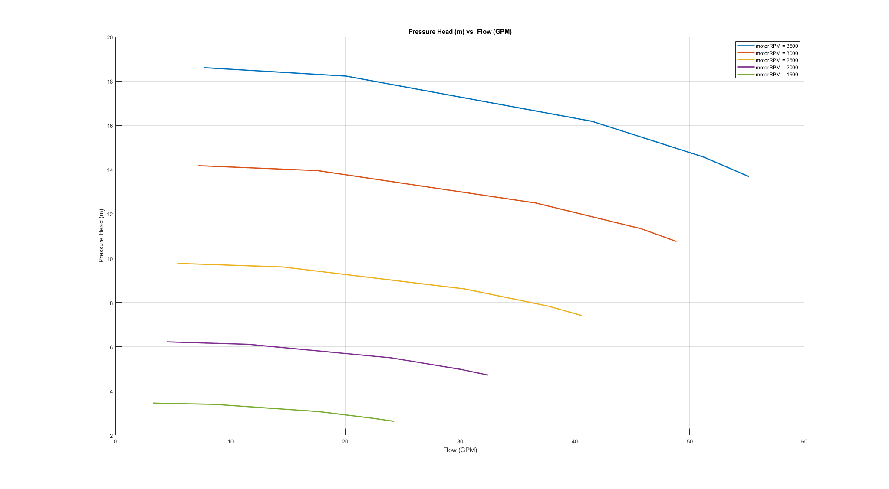
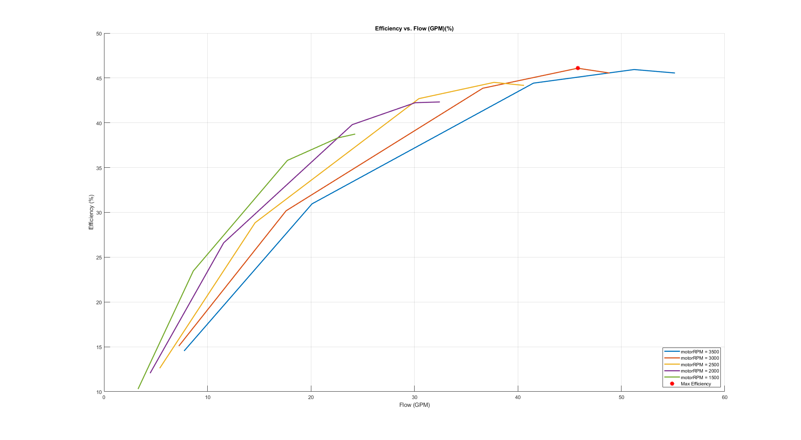

Work for Lab 6: Pump Efficieny
This code written by Michael White, 4/21/2021
clear; clc; close all; % Read in data from lab data.RPM_3500 = readtable('data3500.xlsx'); data.RPM_3000 = readtable('data3000.xlsx'); data.RPM_2500 = readtable('data2500.xlsx'); data.RPM_2000 = readtable('data2000.xlsx'); data.RPM_1500 = readtable('data1500.xlsx'); % Generate cell list for referencing data names rpmList = {'RPM_3500','RPM_3000','RPM_2500','RPM_2000','RPM_1500'}; % Parameters params.rho = 997.83; %kg/m3 params.g = 9.81; %m/s2 params.heightDiff_in = 3.75; %in % - - - Calculations using imported data - - - % Convert values to metric/angular velocity params.heightDiff_m = params.heightDiff_in*0.0254; for i = 1:length(rpmList) data.(char(rpmList(i))).motorActual_rad = data.(char(rpmList(i))).motorActual_RPM*2*pi/60; data.(char(rpmList(i))).motorActual_SD_rad = data.(char(rpmList(i))).motorActual_SD_RPM*2*pi/60; data.(char(rpmList(i))).deltaP_Pa_meas = data.(char(rpmList(i))).deltaP_inH20*249.088908; data.(char(rpmList(i))).deltaP_SD_Pa_meas = data.(char(rpmList(i))).deltaP_SD_inH20*249.088908; data.(char(rpmList(i))).flow_m3s = data.(char(rpmList(i))).flow_GPM/15850.323141; data.(char(rpmList(i))).flow_SD_m3s = data.(char(rpmList(i))).flow_SD_GPM/15850.323141; data.(char(rpmList(i))).torque_Nm = data.(char(rpmList(i))).torque_lbft*1.35582; data.(char(rpmList(i))).torque_SD_Nm = data.(char(rpmList(i))).torque_SD_lbft*1.35582; end % Calculate hydrostatic params.heightDiffPress_Pa = params.rho*params.g*params.heightDiff_m; % Calculate actual delta pressure considering hydrostatic and the mass flow for i = 1:length(rpmList) data.(char(rpmList(i))).deltaP_Pa = data.(char(rpmList(i))).deltaP_Pa_meas-params.heightDiffPress_Pa; data.(char(rpmList(i))).deltaP_SD_Pa = data.(char(rpmList(i))).deltaP_SD_Pa_meas; data.(char(rpmList(i))).massFlow_kgs = data.(char(rpmList(i))).flow_m3s*params.rho; data.(char(rpmList(i))).massFlow_SD_kgs = data.(char(rpmList(i))).flow_SD_m3s*params.rho; end % Calculate the pressure and elevation head, as well as total head for i = 1:length(rpmList) data.(char(rpmList(i))).elevHead_m = params.heightDiff_m.*[1 1 1 1 1]'; data.(char(rpmList(i))).elevHead_SD_m = [0 0 0 0 0]'; data.(char(rpmList(i))).pressHead_m = data.(char(rpmList(i))).deltaP_Pa/(params.rho*params.g); data.(char(rpmList(i))).pressHead_SD_m = data.(char(rpmList(i))).deltaP_SD_Pa/(params.rho*params.g); data.(char(rpmList(i))).totalHead_m = data.(char(rpmList(i))).pressHead_m... + data.(char(rpmList(i))).elevHead_m; data.(char(rpmList(i))).totalHead_SD_m = data.(char(rpmList(i))).pressHead_SD_m; end % Find ideal work, actual work, and efficiency for i = 1:length(rpmList) data.(char(rpmList(i))).workActual_J = data.(char(rpmList(i))).torque_Nm... .* data.(char(rpmList(i))).motorActual_rad; data.(char(rpmList(i))).workActual_SD_J = sqrt(data.(char(rpmList(i))).torque_SD_Nm.^2 ... + data.(char(rpmList(i))).motorActual_SD_rad.^2); data.(char(rpmList(i))).workIdeal_J = data.(char(rpmList(i))).massFlow_kgs*params.g... .* data.(char(rpmList(i))).totalHead_m; data.(char(rpmList(i))).workIdeal_SD_J = params.g*sqrt(data.(char(rpmList(i))).massFlow_kgs.^2 ... + data.(char(rpmList(i))).totalHead_m.^2); data.(char(rpmList(i))).efficiency = 100*data.(char(rpmList(i))).workIdeal_J... ./ data.(char(rpmList(i))).workActual_J; end % Identify max efficiency in entire data set maxCalc.flowList = [data.RPM_3500.flow_GPM',data.RPM_3000.flow_GPM',... data.RPM_2500.flow_GPM',data.RPM_2000.flow_GPM',data.RPM_1500.flow_GPM']; maxCalc.RPMList = [data.RPM_3500.motorActual_RPM',data.RPM_3000.motorActual_RPM',... data.RPM_2500.motorActual_RPM',data.RPM_2000.motorActual_RPM',data.RPM_1500.motorActual_RPM']; maxCalc.effList = [data.RPM_3500.efficiency',data.RPM_3000.efficiency',... data.RPM_2500.efficiency',data.RPM_2000.efficiency',data.RPM_1500.efficiency']; maxCalc.Point = [maxCalc.flowList(maxCalc.effList == max(maxCalc.effList)),... maxCalc.RPMList(maxCalc.effList == max(maxCalc.effList)),max(maxCalc.effList)]; % - - - Post-Processing: Generating figures and writing tables - - - % Write data to external excel file for i = 1:length(rpmList) writetable(data.(char(rpmList(i))),strcat('data/',char(rpmList(i)),'outputData.xlsx')); end % Plot 2D figure - Pressure Head figure; hold on; for i = 1:length(rpmList) plot(... data.(char(rpmList(i))).flow_GPM,... data.(char(rpmList(i))).pressHead_m,... 'LineWidth',2); end title('Pressure Head (m) vs. Flow (GPM)'); xlabel('Flow (GPM)'); ylabel('Pressure Head (m)'); set(gcf,'Position',get(0,'Screensize')); grid on; RPM_legend = legend(... {'motorRPM = 3500','motorRPM = 3000','motorRPM = 2500',... 'motorRPM = 2000','motorRPM = 1500'}); % Plot 2D figure - Efficiency figure; hold on; for i = 1:length(rpmList) plot(... data.(char(rpmList(i))).flow_GPM,... data.(char(rpmList(i))).efficiency,... 'LineWidth',2); end title('Efficiency vs. Flow (GPM)(%)'); xlabel('Flow (GPM)'); ylabel('Efficiency (%)'); set(gcf,'Position',get(0,'Screensize')); grid on; dataPlot.maxPoint = plot(maxCalc.Point(1),maxCalc.Point(3),... 'r*','MarkerSize',8,'LineWidth',2); RPM_legend = legend(... {'motorRPM = 3500','motorRPM = 3000','motorRPM = 2500',... 'motorRPM = 2000','motorRPM = 1500','Max Efficiency'},'Location','southeast'); % Plot 3D figure figure; % Draw lines for each rpm for i = 1:length(rpmList) dataPlot.(char(rpmList(i))) = plot3(... data.(char(rpmList(i))).flow_GPM,... data.(char(rpmList(i))).motorActual_RPM,... data.(char(rpmList(i))).efficiency,... 'LineWidth',2); hold on; end dataPlot.maxPoint_3D = plot3(maxCalc.Point(1),maxCalc.Point(2),maxCalc.Point(3),... 'r*','MarkerSize',8,'LineWidth',2); RPM_legend_3D = legend(... 'motorRPM = 3500','motorRPM = 3000','motorRPM = 2500',... 'motorRPM = 2000','motorRPM = 1500','Max Efficiency'); RPM_legend_3D.AutoUpdate = false; % Create fill and mesh to add 3D shape for i = 1:length(rpmList) for j = 1:length(rpmList) xVect(j) = data.(char(rpmList(j))).flow_GPM(i); yVect(j) = data.(char(rpmList(j))).motorActual_RPM(i); zVect(j) = data.(char(rpmList(j))).efficiency(i); end plot3(xVect,yVect,zVect,'-k'); if i > 1 x = [dataPlot.(char(rpmList(i-1))).XData, fliplr(dataPlot.(char(rpmList(i))).XData)]; y = [dataPlot.(char(rpmList(i-1))).YData, fliplr(dataPlot.(char(rpmList(i))).YData)]; z = [dataPlot.(char(rpmList(i-1))).ZData, fliplr(dataPlot.(char(rpmList(i))).ZData)]; dataFills.(char(rpmList(i))) = fill3(x, y, z, [0.9 0.9 0.9], 'edgeColor', [0.9 0.9 0.9]); end end % Add cleaning features to 3D figure set(gcf,'Position',get(0,'Screensize')); grid on; title('3D Flow (GPM) vs. Efficiency (%)'); xlabel('Flow (GPM)'); ylabel('Motor Setting (RPM)'); zlabel('Efficiency (%)'); % - - - Show Tables in Report Order - - - % Generate vectors to access data rawDataVect = [1,2:9]; metricDataVect = [1,10:17]; pressAndMassVect = [1,18:21]; headVect = [1,22:27]; workVect = [1,28:32]; % Show raw data from motor disp('Raw Motor Data @ 3500 RPM:'); disp(data.RPM_3500(:,rawDataVect)); disp('Raw Motor Data @ 3000 RPM:'); disp(data.RPM_3000(:,rawDataVect)); disp('Raw Motor Data @ 2500 RPM:'); disp(data.RPM_2500(:,rawDataVect)); disp('Raw Motor Data @ 2000 RPM:'); disp(data.RPM_2000(:,rawDataVect)); disp('Raw Motor Data @ 1500 RPM:'); disp(data.RPM_1500(:,rawDataVect)); % Show converted raw data from motor disp('Converted Data @ 3500 RPM:'); disp(data.RPM_3500(:,metricDataVect)); disp('Converted Data @ 3000 RPM:'); disp(data.RPM_3500(:,metricDataVect)); disp('Converted Data @ 2500 RPM:'); disp(data.RPM_3500(:,metricDataVect)); disp('Converted Data @ 2000 RPM:'); disp(data.RPM_3500(:,metricDataVect)); disp('Converted Data @ 1500 RPM:'); disp(data.RPM_3500(:,metricDataVect)); % Show actual delta pressure and mass flow disp('Delta Pressure and Mass Flow @ 3500 RPM:'); disp(data.RPM_3500(:,pressAndMassVect)); disp('Delta Pressure and Mass Flow @ 3000 RPM:'); disp(data.RPM_3000(:,pressAndMassVect)); disp('Delta Pressure and Mass Flow @ 2500 RPM:'); disp(data.RPM_2500(:,pressAndMassVect)); disp('Delta Pressure and Mass Flow @ 2000 RPM:'); disp(data.RPM_2000(:,pressAndMassVect)); disp('Delta Pressure and Mass Flow @ 1500 RPM:'); disp(data.RPM_1500(:,pressAndMassVect)); % Show actual delta pressure and mass flow disp('Head Data @ 3500 RPM:'); disp(data.RPM_3500(:,headVect)); disp('Head Data @ 3000 RPM:'); disp(data.RPM_3000(:,headVect)); disp('Head Data @ 2500 RPM:'); disp(data.RPM_2500(:,headVect)); disp('Head Data @ 2000 RPM:'); disp(data.RPM_2000(:,headVect)); disp('Head Data @ 1500 RPM:'); disp(data.RPM_1500(:,headVect)); % Show work data disp('Work Data @ 3500 RPM:'); disp(data.RPM_3500(:,workVect)); disp('Work Data @ 3000 RPM:'); disp(data.RPM_3000(:,workVect)); disp('Work Data @ 2500 RPM:'); disp(data.RPM_2500(:,workVect)); disp('Work Data @ 2000 RPM:'); disp(data.RPM_2000(:,workVect)); disp('Work Data @ 1500 RPM:'); disp(data.RPM_1500(:,workVect));
Raw Motor Data @ 3500 RPM:
valveSetting motorActual_RPM motorActual_SD_RPM deltaP_inH20 deltaP_SD_inH20 flow_GPM flow_SD_GPM torque_lbft torque_SD_lbft
____________ _______________ __________________ ____________ _______________ ________ ___________ ___________ ______________
100 3514.1 25.243 541.41 1.1741 55.19 0.032404 2.066 0.0054772
80 3517.8 23.172 576.13 1.0374 51.244 0.023022 2.022 0.0044721
60 3538.1 20.976 639.74 0.27826 41.508 0.078867 1.87 0.0070711
40 3550.4 23.067 719.98 0.62319 20.106 0.040373 1.458 0.0044721
20 3567.2 17.381 734.96 0.91262 7.742 0.10474 1.214 0.0054772
Raw Motor Data @ 3000 RPM:
valveSetting motorActual_RPM motorActual_SD_RPM deltaP_inH20 deltaP_SD_inH20 flow_GPM flow_SD_GPM torque_lbft torque_SD_lbft
____________ _______________ __________________ ____________ _______________ ________ ___________ ___________ ______________
100 3105.8 17.422 426.31 0.79977 48.87 0.031623 1.63 2.4825e-16
80 3105.1 22.326 448.98 2.7853 45.786 0.89971 1.59 0
60 3105.6 20.152 494.68 1.0519 36.616 0.15931 1.472 0.0044721
40 3121.2 18.407 552.23 0.38749 17.6 0.070711 1.142 0.0044721
20 3098.8 16.532 560.94 0.096333 7.23 0.7244 0.96 0
Raw Motor Data @ 2500 RPM:
valveSetting motorActual_RPM motorActual_SD_RPM deltaP_inH20 deltaP_SD_inH20 flow_GPM flow_SD_GPM torque_lbft torque_SD_lbft
____________ _______________ __________________ ____________ _______________ ________ ___________ ___________ ______________
100 2591.4 7.7016 294.96 0.5522 40.6 0.036742 1.158 0.0044721
80 2566.7 9.3915 311.56 0.61002 37.698 0.094974 1.138 0.0044721
60 2560.8 5.7353 342.06 0.44266 30.436 0.12462 1.054 0.0054772
40 2578.7 13.131 381.06 0.37367 14.604 0.086197 0.828 0.0044721
20 2601 7.9179 387.53 0.41422 5.384 0.057271 0.704 0.0054772
Raw Motor Data @ 2000 RPM:
valveSetting motorActual_RPM motorActual_SD_RPM deltaP_inH20 deltaP_SD_inH20 flow_GPM flow_SD_GPM torque_lbft torque_SD_lbft
____________ _______________ __________________ ____________ _______________ ________ ___________ ___________ ______________
100 2063.7 15.135 189.12 1.0852 32.464 0.037815 0.778 0.0044721
80 2067.1 9.4497 199.3 0.52171 30.082 0.053104 0.76 0
60 2066.4 10.741 219.83 0.66425 23.994 0.027928 0.71 0
40 2065.2 10.229 243.79 0.16006 11.566 0.048785 0.568 0.0044721
20 2071.3 5.9187 248.18 0.24259 4.454 0.016733 0.49 6.2063e-17
Raw Motor Data @ 1500 RPM:
valveSetting motorActual_RPM motorActual_SD_RPM deltaP_inH20 deltaP_SD_inH20 flow_GPM flow_SD_GPM torque_lbft torque_SD_lbft
____________ _______________ __________________ ____________ _______________ ________ ___________ ___________ ______________
100 1546.6 11.414 107.02 0.28213 24.28 0.022361 0.48 0
80 1549.2 12.066 112.03 0.31699 22.59 0.035355 0.472 0.0044721
60 1548.3 12.073 124.31 0.20144 17.726 0.021909 0.44 6.2063e-17
40 1551.2 10.553 137.21 0.34492 8.626 0.046152 0.36 0
20 1550.2 10.858 139.39 0.057184 3.288 0.016432 0.318 0.0044721
Converted Data @ 3500 RPM:
valveSetting motorActual_rad motorActual_SD_rad deltaP_Pa_meas deltaP_SD_Pa_meas flow_m3s flow_SD_m3s torque_Nm torque_SD_Nm
____________ _______________ __________________ ______________ _________________ __________ ___________ _________ ____________
100 368 2.6434 1.3486e+05 292.46 0.0034819 2.0444e-06 2.8011 0.0074261
80 368.38 2.4266 1.4351e+05 258.4 0.003233 1.4524e-06 2.7415 0.0060634
60 370.51 2.1966 1.5935e+05 69.312 0.0026187 4.9757e-06 2.5354 0.0095871
40 371.79 2.4156 1.7934e+05 155.23 0.0012685 2.5472e-06 1.9768 0.0060634
20 373.56 1.8201 1.8307e+05 227.32 0.00048844 6.6079e-06 1.646 0.0074261
Converted Data @ 3000 RPM:
valveSetting motorActual_rad motorActual_SD_rad deltaP_Pa_meas deltaP_SD_Pa_meas flow_m3s flow_SD_m3s torque_Nm torque_SD_Nm
____________ _______________ __________________ ______________ _________________ __________ ___________ _________ ____________
100 368 2.6434 1.3486e+05 292.46 0.0034819 2.0444e-06 2.8011 0.0074261
80 368.38 2.4266 1.4351e+05 258.4 0.003233 1.4524e-06 2.7415 0.0060634
60 370.51 2.1966 1.5935e+05 69.312 0.0026187 4.9757e-06 2.5354 0.0095871
40 371.79 2.4156 1.7934e+05 155.23 0.0012685 2.5472e-06 1.9768 0.0060634
20 373.56 1.8201 1.8307e+05 227.32 0.00048844 6.6079e-06 1.646 0.0074261
Converted Data @ 2500 RPM:
valveSetting motorActual_rad motorActual_SD_rad deltaP_Pa_meas deltaP_SD_Pa_meas flow_m3s flow_SD_m3s torque_Nm torque_SD_Nm
____________ _______________ __________________ ______________ _________________ __________ ___________ _________ ____________
100 368 2.6434 1.3486e+05 292.46 0.0034819 2.0444e-06 2.8011 0.0074261
80 368.38 2.4266 1.4351e+05 258.4 0.003233 1.4524e-06 2.7415 0.0060634
60 370.51 2.1966 1.5935e+05 69.312 0.0026187 4.9757e-06 2.5354 0.0095871
40 371.79 2.4156 1.7934e+05 155.23 0.0012685 2.5472e-06 1.9768 0.0060634
20 373.56 1.8201 1.8307e+05 227.32 0.00048844 6.6079e-06 1.646 0.0074261
Converted Data @ 2000 RPM:
valveSetting motorActual_rad motorActual_SD_rad deltaP_Pa_meas deltaP_SD_Pa_meas flow_m3s flow_SD_m3s torque_Nm torque_SD_Nm
____________ _______________ __________________ ______________ _________________ __________ ___________ _________ ____________
100 368 2.6434 1.3486e+05 292.46 0.0034819 2.0444e-06 2.8011 0.0074261
80 368.38 2.4266 1.4351e+05 258.4 0.003233 1.4524e-06 2.7415 0.0060634
60 370.51 2.1966 1.5935e+05 69.312 0.0026187 4.9757e-06 2.5354 0.0095871
40 371.79 2.4156 1.7934e+05 155.23 0.0012685 2.5472e-06 1.9768 0.0060634
20 373.56 1.8201 1.8307e+05 227.32 0.00048844 6.6079e-06 1.646 0.0074261
Converted Data @ 1500 RPM:
valveSetting motorActual_rad motorActual_SD_rad deltaP_Pa_meas deltaP_SD_Pa_meas flow_m3s flow_SD_m3s torque_Nm torque_SD_Nm
____________ _______________ __________________ ______________ _________________ __________ ___________ _________ ____________
100 368 2.6434 1.3486e+05 292.46 0.0034819 2.0444e-06 2.8011 0.0074261
80 368.38 2.4266 1.4351e+05 258.4 0.003233 1.4524e-06 2.7415 0.0060634
60 370.51 2.1966 1.5935e+05 69.312 0.0026187 4.9757e-06 2.5354 0.0095871
40 371.79 2.4156 1.7934e+05 155.23 0.0012685 2.5472e-06 1.9768 0.0060634
20 373.56 1.8201 1.8307e+05 227.32 0.00048844 6.6079e-06 1.646 0.0074261
Delta Pressure and Mass Flow @ 3500 RPM:
valveSetting deltaP_Pa deltaP_SD_Pa massFlow_kgs massFlow_SD_kgs
____________ __________ ____________ ____________ _______________
100 1.3393e+05 292.46 3.4744 0.0020399
80 1.4258e+05 258.4 3.226 0.0014493
60 1.5842e+05 69.312 2.6131 0.0049649
40 1.7841e+05 155.23 1.2657 0.0025416
20 1.8214e+05 227.32 0.48738 0.0065936
Delta Pressure and Mass Flow @ 3000 RPM:
valveSetting deltaP_Pa deltaP_SD_Pa massFlow_kgs massFlow_SD_kgs
____________ __________ ____________ ____________ _______________
100 1.0526e+05 199.21 3.0765 0.0019908
80 1.109e+05 693.79 2.8824 0.05664
60 1.2229e+05 262.01 2.3051 0.010029
40 1.3662e+05 96.52 1.108 0.0044515
20 1.3879e+05 23.995 0.45515 0.045603
Delta Pressure and Mass Flow @ 2500 RPM:
valveSetting deltaP_Pa deltaP_SD_Pa massFlow_kgs massFlow_SD_kgs
____________ _________ ____________ ____________ _______________
100 72540 137.55 2.5559 0.0023131
80 76675 151.95 2.3732 0.0059789
60 84271 110.26 1.916 0.0078452
40 93984 93.077 0.91937 0.0054264
20 95596 103.18 0.33894 0.0036054
Delta Pressure and Mass Flow @ 2000 RPM:
valveSetting deltaP_Pa deltaP_SD_Pa massFlow_kgs massFlow_SD_kgs
____________ _________ ____________ ____________ _______________
100 46174 270.31 2.0437 0.0023806
80 48710 129.95 1.8938 0.0033431
60 53824 165.46 1.5105 0.0017582
40 59794 39.87 0.72812 0.0030712
20 60887 60.427 0.28039 0.0010534
Delta Pressure and Mass Flow @ 1500 RPM:
valveSetting deltaP_Pa deltaP_SD_Pa massFlow_kgs massFlow_SD_kgs
____________ _________ ____________ ____________ _______________
100 25725 70.277 1.5285 0.0014077
80 26974 78.958 1.4221 0.0022257
60 30031 50.178 1.1159 0.0013792
40 33246 85.916 0.54304 0.0029054
20 33789 14.244 0.20699 0.0010344
Head Data @ 3500 RPM:
valveSetting elevHead_m elevHead_SD_m pressHead_m pressHead_SD_m totalHead_m totalHead_SD_m
____________ __________ _____________ ___________ ______________ ___________ ______________
100 0.09525 0 13.682 0.029878 13.777 0.029878
80 0.09525 0 14.565 0.026397 14.661 0.026397
60 0.09525 0 16.184 0.0070808 16.279 0.0070808
40 0.09525 0 18.226 0.015858 18.321 0.015858
20 0.09525 0 18.607 0.023223 18.702 0.023223
Head Data @ 3000 RPM:
valveSetting elevHead_m elevHead_SD_m pressHead_m pressHead_SD_m totalHead_m totalHead_SD_m
____________ __________ _____________ ___________ ______________ ___________ ______________
100 0.09525 0 10.753 0.020351 10.848 0.020351
80 0.09525 0 11.33 0.070876 11.425 0.070876
60 0.09525 0 12.493 0.026766 12.588 0.026766
40 0.09525 0 13.957 0.0098603 14.052 0.0098603
20 0.09525 0 14.179 0.0024513 14.274 0.0024513
Head Data @ 2500 RPM:
valveSetting elevHead_m elevHead_SD_m pressHead_m pressHead_SD_m totalHead_m totalHead_SD_m
____________ __________ _____________ ___________ ______________ ___________ ______________
100 0.09525 0 7.4106 0.014052 7.5058 0.014052
80 0.09525 0 7.833 0.015523 7.9282 0.015523
60 0.09525 0 8.609 0.011264 8.7042 0.011264
40 0.09525 0 9.6013 0.0095086 9.6966 0.0095086
20 0.09525 0 9.7659 0.010541 9.8612 0.010541
Head Data @ 2000 RPM:
valveSetting elevHead_m elevHead_SD_m pressHead_m pressHead_SD_m totalHead_m totalHead_SD_m
____________ __________ _____________ ___________ ______________ ___________ ______________
100 0.09525 0 4.7171 0.027614 4.8123 0.027614
80 0.09525 0 4.9761 0.013276 5.0714 0.013276
60 0.09525 0 5.4986 0.016903 5.5938 0.016903
40 0.09525 0 6.1084 0.004073 6.2037 0.004073
20 0.09525 0 6.2201 0.0061731 6.3153 0.0061731
Head Data @ 1500 RPM:
valveSetting elevHead_m elevHead_SD_m pressHead_m pressHead_SD_m totalHead_m totalHead_SD_m
____________ __________ _____________ ___________ ______________ ___________ ______________
100 0.09525 0 2.628 0.0071794 2.7233 0.0071794
80 0.09525 0 2.7556 0.0080662 2.8509 0.0080662
60 0.09525 0 3.0679 0.0051261 3.1632 0.0051261
40 0.09525 0 3.3963 0.008777 3.4916 0.008777
20 0.09525 0 3.4518 0.0014551 3.547 0.0014551
Work Data @ 3500 RPM:
valveSetting workActual_J workActual_SD_J workIdeal_J workIdeal_SD_J efficiency
____________ ____________ _______________ ___________ ______________ __________
100 1030.8 2.6434 469.57 139.38 45.554
80 1009.9 2.4266 463.96 147.26 45.941
60 939.38 2.1966 417.3 161.74 44.423
40 734.96 2.4156 227.49 180.16 30.953
20 614.87 1.8201 89.419 183.53 14.543
Work Data @ 3000 RPM:
valveSetting workActual_J workActual_SD_J workIdeal_J workIdeal_SD_J efficiency
____________ ____________ _______________ ___________ ______________ __________
100 718.76 1.8244 327.41 110.62 45.551
80 700.97 2.3379 323.06 115.59 46.087
60 649.07 2.1103 284.65 125.54 43.855
40 506.08 1.9275 152.74 138.28 30.181
20 422.38 1.7312 63.734 140.1 15.09
Work Data @ 2500 RPM:
valveSetting workActual_J workActual_SD_J workIdeal_J workIdeal_SD_J efficiency
____________ ____________ _______________ ___________ ______________ __________
100 426.07 0.80653 188.2 77.784 44.17
80 414.71 0.98349 184.58 81.186 44.508
60 383.21 0.60065 163.61 87.433 42.694
40 303.16 1.375 87.453 95.55 28.848
20 259.99 0.8292 32.789 96.795 12.612
Work Data @ 2000 RPM:
valveSetting workActual_J workActual_SD_J workIdeal_J workIdeal_SD_J efficiency
____________ ____________ _______________ ___________ ______________ __________
100 227.96 1.5849 96.482 51.29 42.325
80 223.05 0.98957 94.215 53.106 42.239
60 208.31 1.1248 82.889 56.841 39.792
40 166.55 1.0712 44.312 61.276 26.605
20 144.1 0.6198 17.371 62.014 12.055
Work Data @ 1500 RPM:
valveSetting workActual_J workActual_SD_J workIdeal_J workIdeal_SD_J efficiency
____________ ____________ _______________ ___________ ______________ __________
100 105.4 1.1952 40.835 30.636 38.742
80 103.82 1.2635 39.772 31.254 38.308
60 96.725 1.2642 34.627 32.905 35.8
40 79.289 1.1051 18.6 34.664 23.459
20 69.993 1.137 7.2025 34.856 10.29
 